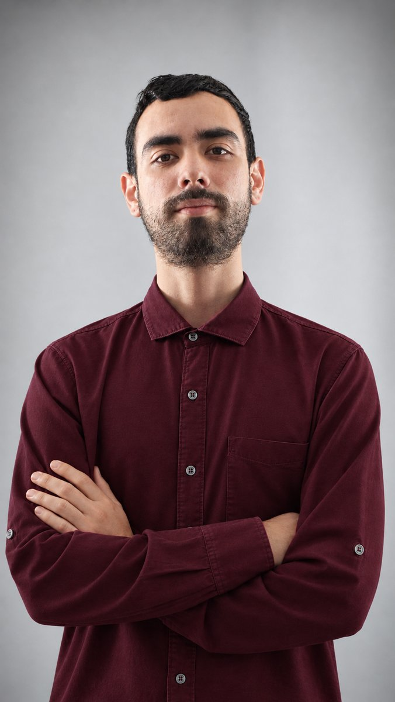

Hola, soy
Ingeniero de Sistemas y Computación de la UTP. Construyo aplicaciones web y móviles, trabajo con bases de datos y me gusta aprender rápido en equipo.

Soy ingeniero de sistemas con formación en desarrollo y soporte tecnológico. En la universidad trabajé con C, C++, Java, JavaScript y Python, y el que más domino es Python. Hice mis prácticas en Veritran, donde aprendí bases de datos, programación y pruebas funcionales, y ahora construyo mis propias APIs. Soy adaptable, aprendo rápido y me oriento a resultados. Mi inglés es de nivel profesional (B2+/C1).
Del desarrollo low-code a la atención al cliente bilingüe.
Equipo de Soluciones. Construí pantallas, procesos, transacciones y vinculación de componentes en la plataforma low-code de Veritran. Desarrollé las interfaces visuales de pantallas prediseñadas, les di funcionalidad a los botones y trabajé en los proyectos Vacúnate y Educación, aplicando bases de datos y trabajo colaborativo.
Interpretación remota en inglés y español, con precisión y manejo de conversaciones de alta presión.
Accedo 24/7 PEI, World Travel Assist y Lamassu Media. Más de cuatro años de comunicación en inglés y español, CRM y resolución de conflictos.
Mi práctica en Veritran (soluciones web y móviles en low-code) y mi proyecto personal GastosApp, una API REST en Python.
Escenario: practicante en implementación de software, Equipo de Soluciones. Seguimiento diario y dos evaluaciones de objetivos.
Aplicación para llevar el registro de las vacunaciones contra el COVID-19. A partir de pantallas prediseñadas que nos entregaron, desarrollé las interfaces visuales y le di funcionalidad a los botones.
Aplicación para registrar las notas escolares y la información de estudiantes, profesores y otros datos del colegio. Igual que en Vacúnate, construí las interfaces de las pantallas prediseñadas y programé la funcionalidad de los botones.
Hecha con Python y FastAPI. Cada usuario se registra, inicia sesión y administra solo sus propios gastos. Incluye un resumen mensual por categoría en pesos (COP) y en dólares (USD), usando una API externa de tasas de cambio.
La demo corre en un plan gratuito: la primera carga puede tardar cerca de un minuto.
Lo que uso para construir aplicaciones web.
Estoy buscando mi próxima oportunidad como desarrollador. Escríbeme o llámame.